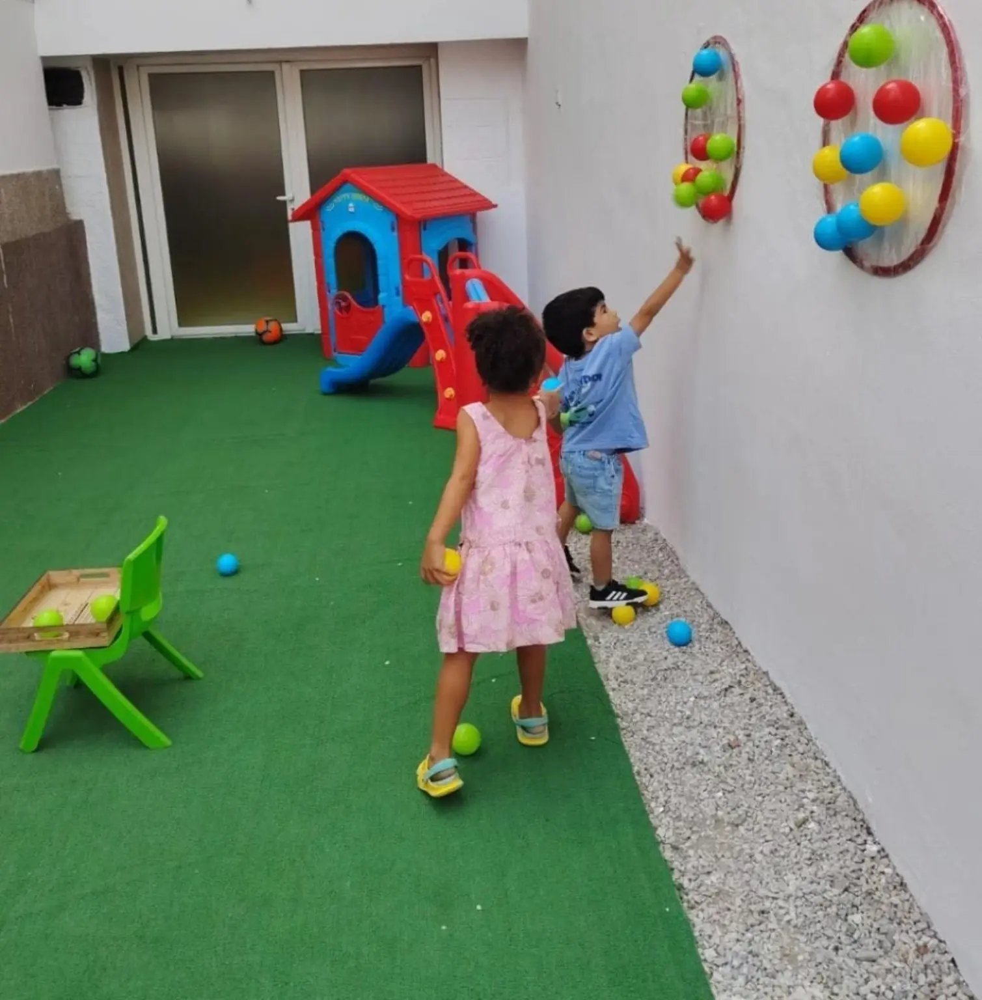
Un cadre pensé pour que chaque enfant grandisse à son rythme.
De la crèche (0–3 ans) au jardin d'enfants (3–6 ans), nos ateliers Montessori bilingues français–arabe donnent aux enfants de vrais outils pour explorer, compter, lire et découvrir le monde.
Le matériel avant le discours
Chaque étagère est organisée pour que l'enfant se serve seul : perles pour compter, lettres rugueuses pour sentir les sons, cartes et globes pour situer le monde.
L'éducatrice observe, prépare l'environnement et guide plutôt qu'elle n'impose. L'enfant choisit son atelier, répète le geste jusqu'à le maîtriser, et avance à son propre rythme.
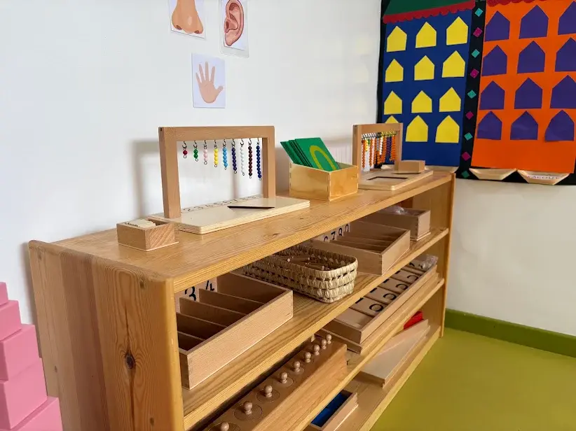
Perles, chiffres et boîtes de couleurs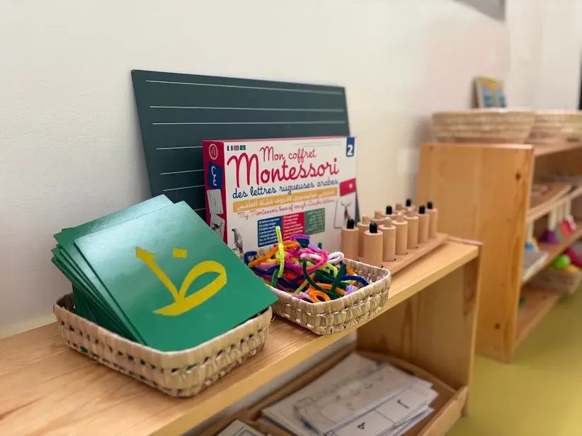
Langage bilingue FR / AR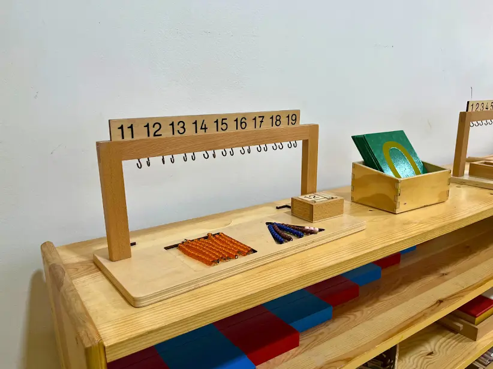
Numération jusqu'à 19Vie pratique
Verser, transvaser, se laver les mains seul : les gestes du quotidien construisent la concentration et l'autonomie.
Sensoriel & langage
Sons, formes et couleurs manipulés avec les mains, en français et en arabe, avant d'être nommés ou écrits.
Mathématiques & monde
Barres de perles, globes et cartes de géographie posent les bases du calcul et de la curiosité pour le monde.
Une salle, plusieurs mondes
Chaque coin de l'école est pensé pour une activité précise, à hauteur d'enfant.
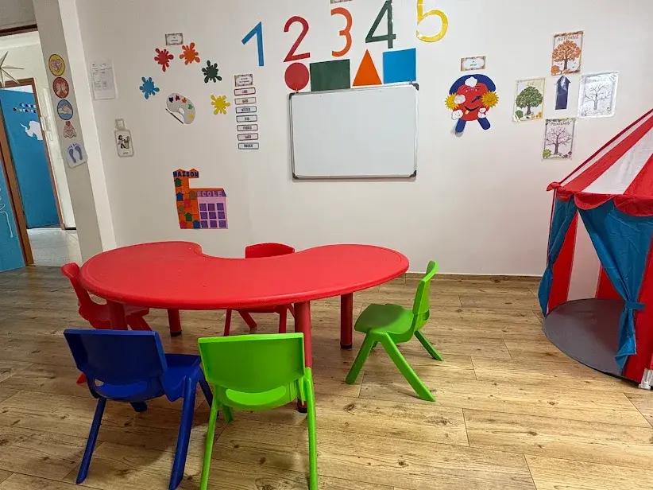
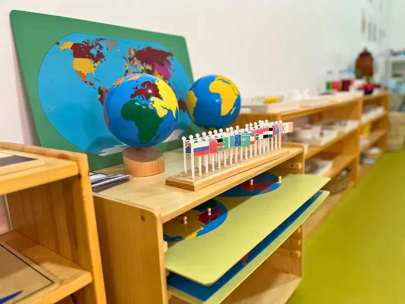
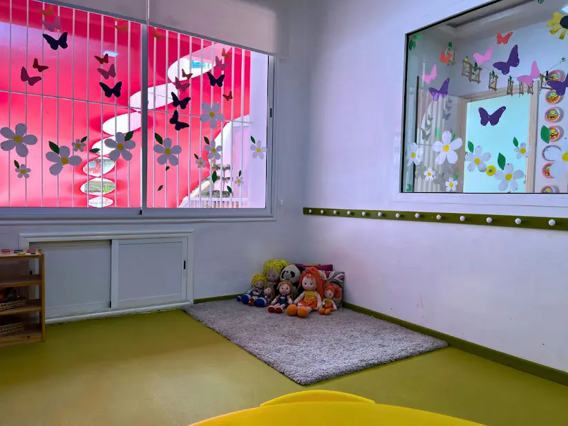
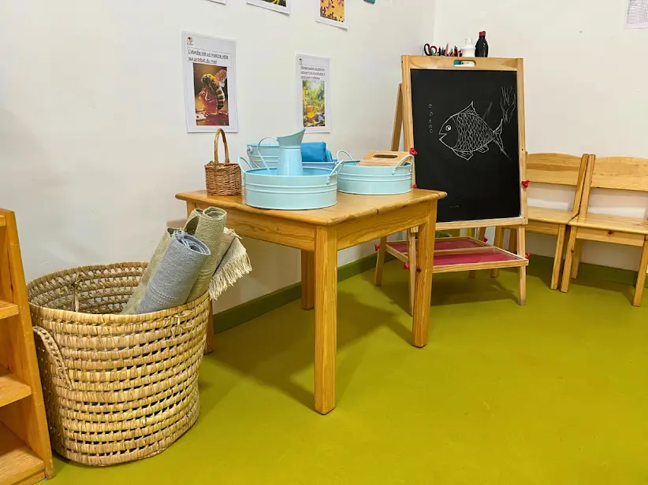
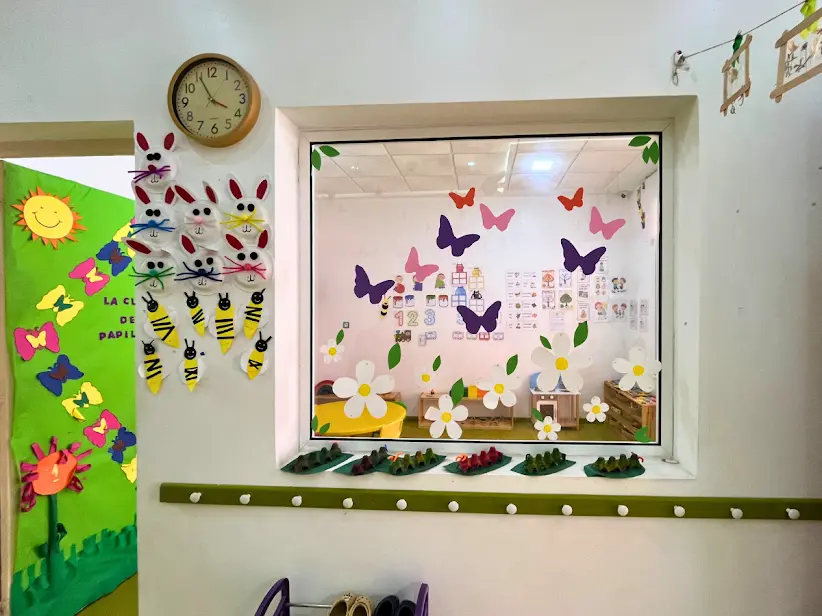
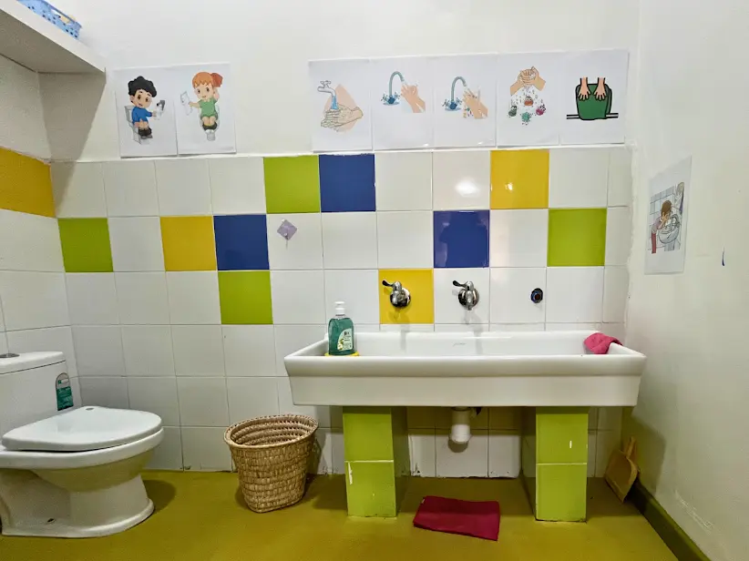
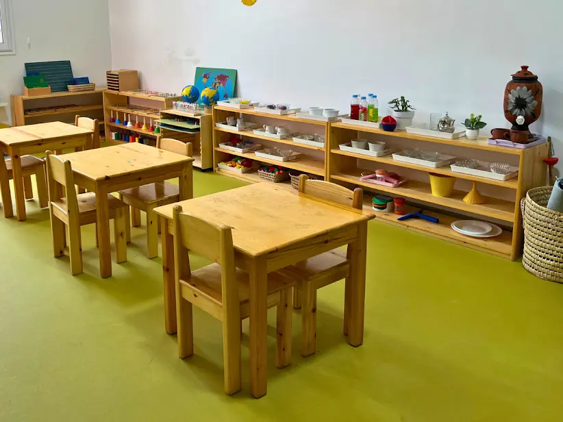
Une journée type
-
Accueil & arrivée libre
Les enfants rangent leurs affaires et choisissent leur premier atelier.
-
Ateliers individuels
Vie pratique, sensoriel, langage, mathématiques : chacun avance à son rythme, seul ou en petit groupe.
-
Regroupement & langage
Comptines et échanges en français et en arabe, en petit cercle.
-
Déjeuner & hygiène
Repas partagé et lavage des mains, avec toujours plus d'autonomie encouragée.
-
Sieste ou activités calmes
Repos pour les plus petits, ateliers créatifs et arts plastiques pour les grands.
-
Départ
Un mot sur la journée est partagé avec chaque parent.
Horaires, adresse & inscription
À Belvédère, à quelques minutes de Racine, Gauthier, Roches Noires et Bourgogne.
| Lundi – Vendredi | 09:00 – 16:30 |
| Samedi | 09:00 – 12:30 |
| Dimanche | Fermé |
Adresse
84 Rue Camille Saint-Saëns, Belvédère, Casablanca 20300
Téléphone
Suivez le quotidien de la classe
Photos d'ateliers, événements et portes ouvertes sont partagés en premier sur nos réseaux.